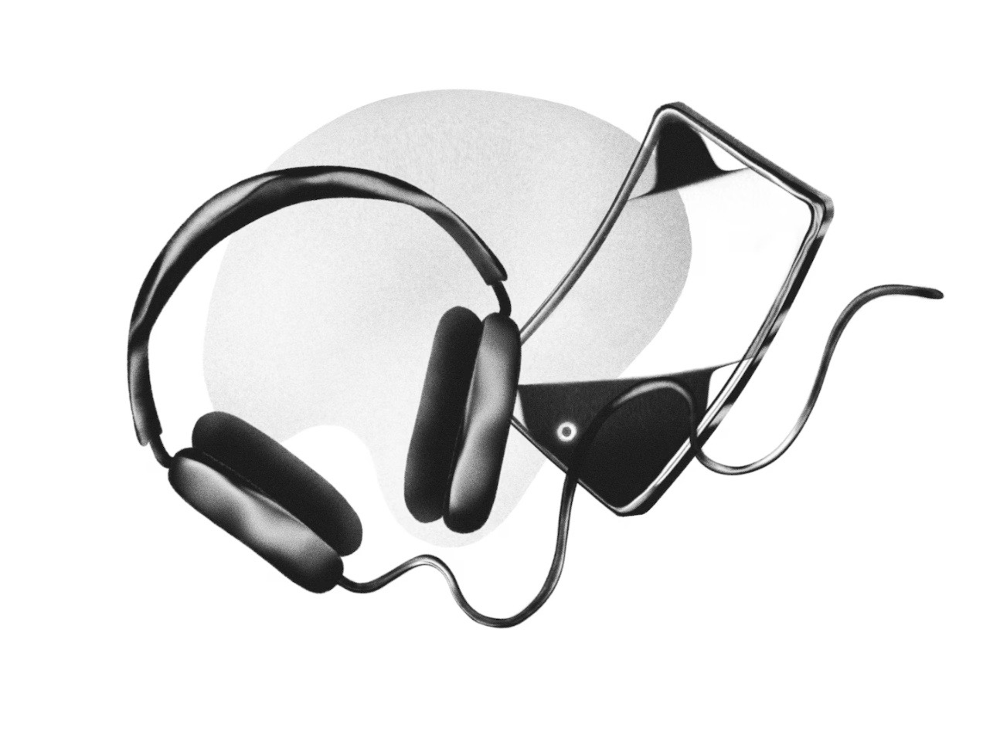

(Marvin Joseph/The Washington Post)
By Caitlin Gilbert
February 28, 2023 at 6:05 a.m. EST
Do brains peak in childhood? Is it all downhill after 30? Can a 65-year-old brain keep up with an adolescent?
While growth charts tracking metrics like height and weight give a relatively clear picture of the range of human physical development, less has been known about the key milestones of normal brain aging.
To find out more, an international team of researchers collected brain scan data from multiple studies representing 101,457 brains at all stages of life. The youngest scan in the study came from a 16-week-old fetus; the oldest was from a 100-year-old.
Across this large data set, some striking milestones emerged.
I don’t think that we provide the respect to the aging and the wisdom that [older individuals have] accumulated throughout a life span
- BJ Casey, professor of neuroscience and psychologist at Barnard College
Importantly, the study is meant to serve as a broad reference rather than an exact road map personalized to individual people, said Jakob Seidlitz, a study co-author and research scientist at the Lifespan Brain Institute of the Children’s Hospital of Philadelphia and University of Pennsylvania.
“Absolute differences in size in these features are somewhat meaningless,” Seidlitz said. “They’re useful insofar as mapping a reference for any given age, given how dynamic these processes are.”
Brain development also gets increasingly variable the older we get. Even different parts of the brain, like regions involved in vision vs. speech, hit their own milestones at different points in life, said Sahar Ahmad, a research instructor at the UNC School of Medicine who specializes in neuroimaging over development.
While some of these structural elements have been tied to behaviors — white matter has been associated with more efficient decision-making, for example — there are still more complex genetic, cellular and functional changes underpinning the big, structural shifts.
And, while the brain is largely set up by birth, with the creation of new neurons largely complete, how different parts of the brain communicate with one another change over life.
The good news is, that unlike other parts of the body, our brains are built to change over our lifetime, meeting the challenges set by every life stage. While nobody can predict the exact ages of brain development, here’s a general guide to how the brain may change at various ages.
(Illustrations by Agnes Jonas for The Washington Post)
Babies’ brains are like sponges, soaking up all kinds of environmental information, particularly from their parents or caregivers. In the first year or so, for example, babies can learn any language, but that capacity is quickly narrowed based on the sounds or signs they hear or see. That rapid fine-tuning is why it can be much more difficult to learn new languages later in life, particularly ones that are different from a native language.
Part of this sponginess is due to the huge number of synapses, or the connections between neurons, formed over the first couple years of life.
“Early in life, we have a whole lot of excitatory connections, so there’s a lot of learning potential,” said BJ Casey, professor of neuroscience and psychologist at Barnard College, who studies adolescent brain development.
Important cellular and genetic processes are also underway. While most neurons are born by the time of birth, other types of cells in the brain such as glia are developing and maturing rapidly in the first years of life. Glial cells — which can help form synapses, insulate connections, provide nutrients and destroy pathogens in the brain — will continue to mature for several decades.
Both neurons and glia also accrue mutations throughout life, but the ones “occurring during [early] development seem to be very important at setting up risk for diseases later in life,” said Chris Walsh, professor of pediatrics and neurology at Harvard Medical School, who studies the genetics of brain development.
Starting at about 18 months to two years, the brain shifts toward learning, which involves both strengthening important connections and decreasing ones that aren’t being used. To help the brain prioritize certain experiences, more inhibitory connections, which act as brakes for information processing, develop across brain circuits.
To decrease connections, babies lose about half of those synapses they had just formed in a process known as synaptic pruning. To strengthen connections, myelination, the process by which neuronal connections are wrapped and insulated with the fatty protein, myelin rapidly increases throughout childhood and beyond.
This increased signal-to-noise ratio for information that corresponds with children’s experiences is especially important as they learn to process emotions, interact in social settings and develop more complex communication skills.
Because there is so much connection building and strengthening during childhood, the brain is particularly sensitive to interactions with caregivers and others in their environment. Stress stemming from trauma or neglect in this period can therefore have deeply profound effects on the rest of a child’s brain development over life.
From the ages of about 10 to 19, there are dynamic changes in brain networks involved in learning how to process emotions and motivations around different experiences, as teens navigate life that begins to move away from the safety of home.
“During adolescence, you have to learn to fend for yourself,” as you won’t have the same protection from parents as you did when you were younger, Casey said. “Learning the boundaries of society’s rules is exactly what adolescence is about, preparing you to be a functioning adult.”
This heightened sensitivity to the environment is reflected in another bout of widespread synaptic pruning and myelination, but especially in circuits underlying emotion and reward processing. It’s why teens are incentivized to explore new experiences, no matter how risky or threatening they can be.
The mid-to-late 20s are often thought of as a kind of “peak” of brain development or an example of when the brain has “matured.” This myth stems in part due to the observation that white matter volume, a proxy for the “speed” of information processing, reaches a high level at these ages.
Neuronal networks are continually honed and adjusted into young adulthood, especially those involved in rational thought and considering future consequences. Yet, the brain is by no means “done” with its development.
As the brain progresses into the 30s and 40s, adult synaptic plasticity, or the ability for connections to strengthen or weaken in response to activity changes, is thought to reprioritize rather than diminish.
“The system is just working differently. It’s moved into something that’s maybe a little more strategic and longer term, and not into ‘I need to remember exactly what this is and be really quick and sharp like I was in my 20s,’” said Mark Harnett, associate professor of brain and cognitive sciences at MIT who studies how neurons communicate in circuits and networks underlying complex behaviors. But those two things “are actually challenging to implement simultaneously.”
When you lose your keys or forget a name, it may feel like your brain isn’t working as well as it used to. But new research dispels the belief that plasticity, the brain’s capacity to respond to change, diminishes in the adult and aging brain.
Harnett’s lab recently showed the presence of “silent synapses,” connections that are inactive until they’re recruited to help form new memories, in adult mice. These synapses had long been associated with early development, but Harnett and his lab have now also confirmed their widespread presence in adult human brains across ages and different regions.
The findings, which suggest that your brain can dynamically change throughout adulthood, are changing the way scientists view the aging brain.
“Everyone feels like plasticity goes away as you get older and neurons just die,” Harnett said. “Here we found something that’s really robust. It’s like, hey, there’s all these silent synapses and all this extra plasticity capacity in the adult cortex. That’s awesome, we didn’t know that was there. That’s super exciting!”
In the 40s and beyond, life shifts toward the challenging roles of adulthood — career, caring for family and giving back to the next generation. Because of how variable individual experiences can be, brain milestones are also trickier to set at specific ages later in life.
Experiences such as engagement in a community, lifestyle choices or exposure to stress or toxins can drastically affect brain development and aging. A 50-year-old who is highly social and regularly exercising, traveling or volunteering might have a “younger” brain than a 50-year-old who is largely isolated from others and rarely engages in enriching activities.
Research suggests that older adults who engage in memory training tasks, crossword puzzles, and even video games can improve some cognitive functions, but the mechanisms underlying those findings are still unknown.
Late in life, the brain does shrink in size and can begin to degenerate. Yet older individuals also have the potential for greater wisdom built off a lifetime of experiences. Some researchers have suggested that the brain circuitry tied to emotional processing and moral decision-making might be involved in different components of wisdom, although that research is still limited.
“I don’t think that we provide the respect to the aging and the wisdom that they’ve accumulated throughout a life span,” Casey said.